%%capture
!apt-get update
!apt-get install gdal-bin libgdal-dev
!pip install -q rioxarray
!pip install -qU "geemap[workshop]"3 Réhaussement et visualisation d’images
Assurez-vous de lire ce préambule avant d’exécutez le reste du notebook.
3.1 Préambule
3.1.1 Objectifs
Dans ce chapitre, nous abordons quelques techniques de réhaussement et de visualisation d’images. Ce chapitre est aussi disponible sous la forme d’un notebook Python:

3.1.2 Librairies
Les librairies qui vont être explorées dans ce chapitre sont les suivantes:
Dans l’environnement Google Colab, seul rioxarray et GDAL doivent être installés:
Dans l’environnement Google Colab, on peut s’assurer que les librairies sont installées:
%%capture
!pip install -qU matplotlib rioxarray xrscipy scikit-imageVérifier les importations:
import numpy as np
import rioxarray as rxr
from scipy import signal
import xarray as xr
import xrscipy
import matplotlib.pyplot as plt3.1.3 Données
Nous allons utilisez les images suivantes dans ce chapitre:
%%capture
import gdown
gdown.download('https://drive.google.com/uc?export=download&confirm=pbef&id=1a6Ypg0g1Oy4AJt9XWKWfnR12NW1XhNg_', output= 'RGBNIR_of_S2A.tif')
gdown.download('https://drive.google.com/uc?export=download&confirm=pbef&id=1a4PQ68Ru8zBphbQ22j0sgJ4D2quw-Wo6', output= 'landsat7.tif')
gdown.download('https://drive.google.com/uc?export=download&confirm=pbef&id=1_zwCLN-x7XJcNHJCH6Z8upEdUXtVtvs1', output= 'berkeley.jpg')
gdown.download('https://drive.google.com/uc?export=download&confirm=pbef&id=1dM6IVqjba6GHwTLmI7CpX8GP2z5txUq6', output= 'SAR.tif')Vérifiez que vous êtes capable de les lire :
with rxr.open_rasterio('berkeley.jpg', mask_and_scale= True) as img_rgb:
print(img_rgb)
with rxr.open_rasterio('RGBNIR_of_S2A.tif', mask_and_scale= True) as img_rgbnir:
print(img_rgbnir)
with rxr.open_rasterio('SAR.tif', mask_and_scale= True) as img_SAR:
print(img_SAR)3.2 Visualisation en Python
Il faut d’entrée mentionner que Python n’est pas vraiment fait pour visualiser de la donnée de grande taille, le niveau d’interactivité est aussi assez limité. Pour une visualisation interactives, il est plutôt conseillé d’utiliser un outil comme QGIS. Néanmoins, il est possible de visualiser de petites images avec la librairie matplotlib qui est la librairie principale de visualisation en Python. Cette librairie est extrêmement riche et versatile, nous ne présenterons que les bases nécessaires pour démarrer. Le lecteur désirant aller plus loin pourra consulter les nombreux tutoriels disponibles comme celui-ci.
La fonction de base pour créer une figure est subplots, la largeur et hauteur en pouces de la figure peuvent être contrôlées via le paramètre figsize:
import matplotlib.pyplot as plt
fig, ax= plt.subplots(figsize=(6, 5))
plt.show()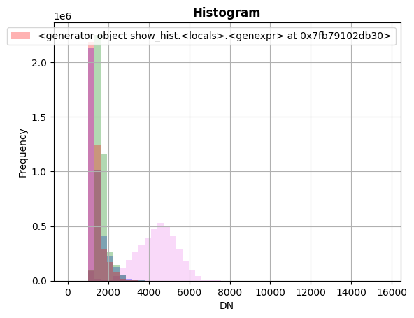
Pour l’affichage des images, la fonction imshow permet d’afficher une matrice 2D à une dimension en format float ou une matrice RVB avec 3 bandes. Il est important que les dimensions de la matrice soient dans l’ordre hauteur, largeur et bande.
import matplotlib.pyplot as plt
fig, ax= plt.subplots(figsize=(6, 5))
plt.imshow(img_rgbnir[0].data)
plt.show()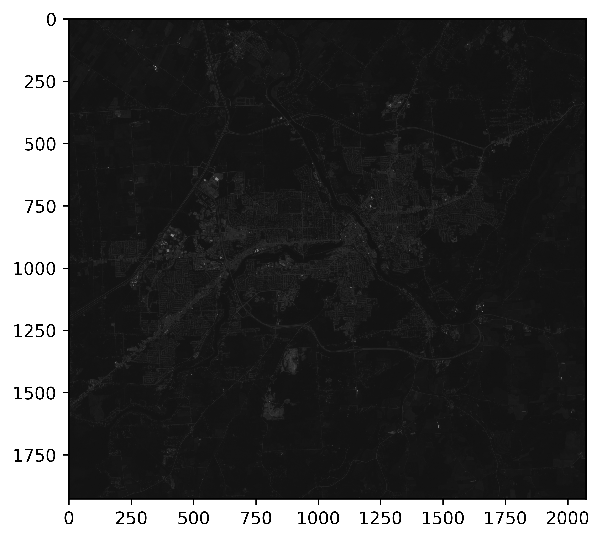
Pour un affichage à 3 bandes, les valeurs seront clippées entre 0 et 1, il est donc nécessaire de normaliser les valeurs avant l’affichage:
import matplotlib.pyplot as plt
fig, ax= plt.subplots(figsize=(6, 5))
plt.imshow(img_rgbnir.data.transpose(1,2,0)/2500.0)
plt.show()On remarquera les valeurs des axes x et y avec une origine en haut à gauche. Ceci est un référentiel purement matricielle (lignes et colonnes), il n’y a pas de géoréférence ici. Pour pallier à cette limitation, les librairies rasterio et xarray proposent une extension de la fonction imshow permettant d’afficher les coordonnées cartographiques ainsi qu’un contrôle la dynamique de l’image:
import rioxarray as rxr
fig, ax= plt.subplots(figsize=(6, 5))
img_rgbnir.sel(band=[1,2,3]).plot.imshow(vmin=86, vmax=5000)
ax.set_title('Imshow avec rioxarray')
plt.show()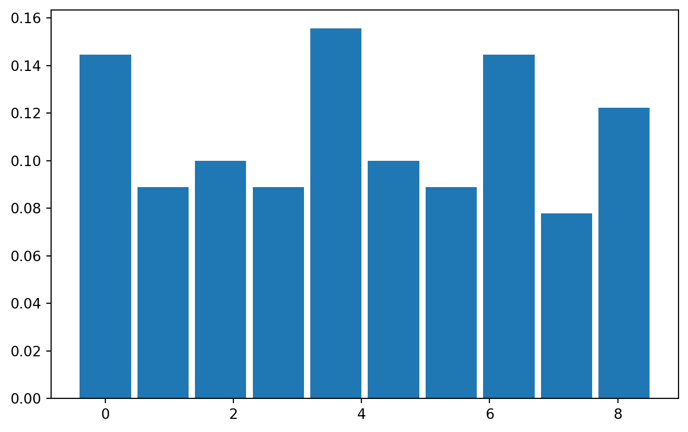
3.3 Réhaussements visuels
Le but du réhaussement visuel d’une image vise principalement à améliorer la qualité visuelle d’une image en améliorant le contraste, la dynamique ou la texture d’une image. De manière générale, ce réhaussement ne modifie pas la donnée d’origine mais est plutôt appliquée dynamiquement à l’affichage pour des fins d’inspection visuelle.
3.3.1 Statistiques d’une image
On peut considérer un ensemble de statistique globales pour chacune des bandes d’une image: - valeurs minimales et maximales - valeurs moyennes, médianes et quantiles - écart-types, skewness et kurtosis Ces statistiques doivent être calculées pour chaque bande d’une image multispectrale.
En ligne de commande, gdalinfo permet d’interroger rapidement un fichier image pour connaitre les statistiques de base:
!gdalinfo -stats landsat7.tifDriver: GTiff/GeoTIFF
Files: landsat7.tif
landsat7.tif.aux.xml
Size is 2181, 1917
Coordinate System is:
PROJCS["WGS 84 / Pseudo-Mercator",
GEOGCS["WGS 84",
DATUM["WGS_1984",
SPHEROID["WGS 84",6378137,298.257223563,
AUTHORITY["EPSG","7030"]],
AUTHORITY["EPSG","6326"]],
PRIMEM["Greenwich",0,
AUTHORITY["EPSG","8901"]],
UNIT["degree",0.0174532925199433,
AUTHORITY["EPSG","9122"]],
AUTHORITY["EPSG","4326"]],
PROJECTION["Mercator_1SP"],
PARAMETER["central_meridian",0],
PARAMETER["scale_factor",1],
PARAMETER["false_easting",0],
PARAMETER["false_northing",0],
UNIT["metre",1,
AUTHORITY["EPSG","9001"]],
AXIS["X",EAST],
AXIS["Y",NORTH],
EXTENSION["PROJ4","+proj=merc +a=6378137 +b=6378137 +lat_ts=0.0 +lon_0=0.0 +x_0=0.0 +y_0=0 +k=1.0 +units=m +nadgrids=@null +wktext +no_defs"],
AUTHORITY["EPSG","3857"]]
Origin = (-13651650.000000000000000,4576290.000000000000000)
Pixel Size = (30.000000000000000,-30.000000000000000)
Metadata:
AREA_OR_POINT=Area
OVR_RESAMPLING_ALG=NEAREST
TIFFTAG_RESOLUTIONUNIT=1 (unitless)
TIFFTAG_XRESOLUTION=1
TIFFTAG_YRESOLUTION=1
Image Structure Metadata:
COMPRESSION=DEFLATE
INTERLEAVE=PIXEL
Corner Coordinates:
Upper Left (-13651650.000, 4576290.000) (122d38' 5.49"W, 37d58'40.08"N)
Lower Left (-13651650.000, 4518780.000) (122d38' 5.49"W, 37d34'10.00"N)
Upper Right (-13586220.000, 4576290.000) (122d 2'49.53"W, 37d58'40.08"N)
Lower Right (-13586220.000, 4518780.000) (122d 2'49.53"W, 37d34'10.00"N)
Center (-13618935.000, 4547535.000) (122d20'27.51"W, 37d46'26.05"N)
Band 1 Block=512x512 Type=Byte, ColorInterp=Red
Min=19.000 Max=233.000
Minimum=19.000, Maximum=233.000, Mean=98.433, StdDev=21.164
NoData Value=0
Overviews: 1091x959, 546x480
Metadata:
STATISTICS_MAXIMUM=233
STATISTICS_MEAN=98.433096940153
STATISTICS_MINIMUM=19
STATISTICS_STDDEV=21.164021026458
Band 2 Block=512x512 Type=Byte, ColorInterp=Green
Min=19.000 Max=178.000
Minimum=19.000, Maximum=178.000, Mean=55.068, StdDev=22.204
NoData Value=0
Overviews: 1091x959, 546x480
Metadata:
STATISTICS_MAXIMUM=178
STATISTICS_MEAN=55.067787534804
STATISTICS_MINIMUM=19
STATISTICS_STDDEV=22.203571974581
Band 3 Block=512x512 Type=Byte, ColorInterp=Blue
Min=19.000 Max=187.000
Minimum=19.000, Maximum=187.000, Mean=43.341, StdDev=20.330
NoData Value=0
Overviews: 1091x959, 546x480
Metadata:
STATISTICS_MAXIMUM=187
STATISTICS_MEAN=43.340507443056
STATISTICS_MINIMUM=19
STATISTICS_STDDEV=20.32987736339Les librairies de base comme xarray et numpy peuvent facilement produire des statistiques comme avec la fonction stats:
import rasterio as rio
import numpy as np
with rio.open('landsat7.tif') as src:
stats= src.stats()
print(stats)La librairie xarray donne accès à des fonctionnalités plus sophistiquées comme le calcul des quantiles:
import rioxarray as riox
with riox.open_rasterio('landsat7.tif', masked= True) as src:
print(src)
quantiles = src.quantile(dim=['x','y'], q=[.025,.25,.5,.75,.975])
quantiles<xarray.DataArray (band: 3, y: 1917, x: 2181)> Size: 50MB
[12542931 values with dtype=float32]
Coordinates:
* band (band) int64 24B 1 2 3
* x (x) float64 17kB -1.365e+07 -1.365e+07 ... -1.359e+07
* y (y) float64 15kB 4.576e+06 4.576e+06 ... 4.519e+06 4.519e+06
spatial_ref int64 8B 0
Attributes:
AREA_OR_POINT: Area
OVR_RESAMPLING_ALG: NEAREST
TIFFTAG_RESOLUTIONUNIT: 1 (unitless)
TIFFTAG_XRESOLUTION: 1
TIFFTAG_YRESOLUTION: 1
STATISTICS_MAXIMUM: 233
STATISTICS_MEAN: 98.433096940153
STATISTICS_MINIMUM: 19
STATISTICS_STDDEV: 21.164021026458
scale_factor: 1.0
add_offset: 0.0<xarray.DataArray (quantile: 5, band: 3)> Size: 120B
array([[ 54., 19., 19.],
[ 85., 38., 27.],
[ 99., 54., 38.],
[111., 69., 57.],
[140., 102., 89.]])
Coordinates:
* band (band) int64 24B 1 2 3
* quantile (quantile) float64 40B 0.025 0.25 0.5 0.75 0.9753.3.1.1 Calcul de l’histogramme
Le calcul d’un histogramme pour une image (une bande) permet d’avoir une vue plus détaillée de la répartition des valeurs radiométriques. Le calcul d’un histogramme nécessite minimalement de faire le choix d’une valeur du nombre de bins (ou de la largeur). Un bin est un intervalle de valeurs pour lequel on peut calculer le nombre de valeurs observées dans l’image. La fonction de base pour ce type de calcul est la fonction numpy.histogram():
import numpy as np
array = np.random.randint(0,10,100) # 100 valeurs aléatoires entre 0 et 10
hist, bin_limites = np.histogram(array, density=True)
print('valeurs :',hist)
print(';imites :',bin_limites)valeurs : [0.14444444 0.04444444 0.16666667 0.1 0.06666667 0.11111111
0.12222222 0.08888889 0.1 0.16666667]
;imites : [0. 0.9 1.8 2.7 3.6 4.5 5.4 6.3 7.2 8.1 9. ]Le calcul se fait avec 10 intervalles par défaut.
plt.bar(bin_limites[:-1],hist)
plt.show()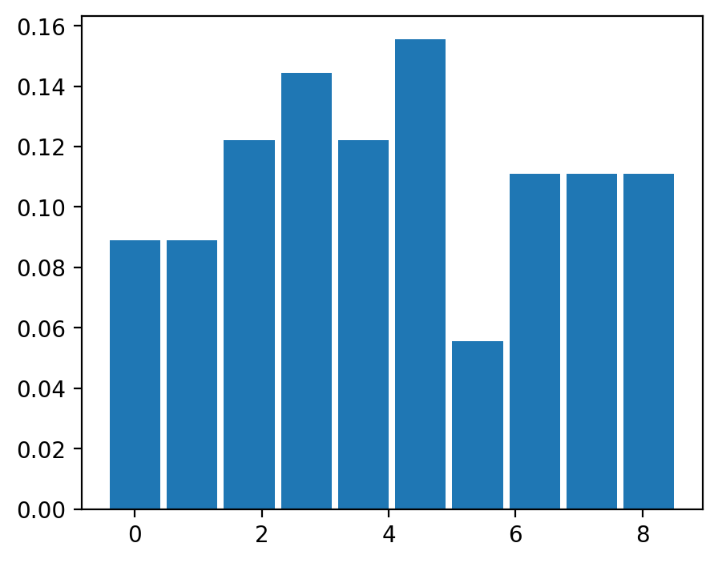
Pour des besoins de visualisation, le calcul des valeurs extrêmes de l’histogramme peut aussi se faire via les quantiles comme discutés auparavant.
3.3.1.1.1 Visualisation des histogrammes
La librarie rasterio est probablement l’outil le plus simples pour visualiser rapidement des histogrammes sur une image multi-spectrale:
import rasterio as rio
from rasterio.plot import show_hist
with rio.open('RGBNIR_of_S2A.tif') as src:
show_hist(src, bins=50, lw=0.0, stacked=False, alpha=0.3,histtype='stepfilled', title="Histogram")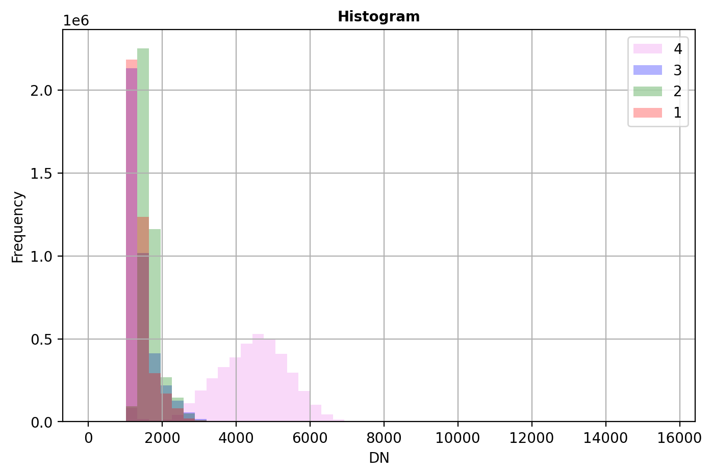
3.3.2 Réhaussements linéaires
Le réhaussement linéaire (linear stretch) d’une image est la forme la plus simple de réhaussement, elle consiste 1) à optimiser les valeurs des pixels d’une image afin de maximiser la dynamique disponibles à l’affichage, ou 2) changer le format de stockage des valeurs (e.g. de 8 bit à 16 bit):
\[ \text{nouvelle valeur d'un pixel} = \frac{\text{valeur d'un pixel} - min_0}{max_0 - min_0}\times (max_1 - min_1)+min_1 \tag{3.1}\]
Par cette opération, on passe de la dynamique de départ (\(max_0 - min_0\)) vers la dynamique cible (\(max_1 - min_1\)). Bien que cette opération semble triviale, il est important d’être conscient des trois contraintes suivantes: 1. Faire attention à la dynamique cible, ainsi, pour sauvegarder une image en format 8 bit, on utilisera alors \(max_1=255\) et \(min_1=0\). 2. Préservation de la valeur de no data : il faut faire attention à la valeur \(min_1\) dans le cas d’une valeur présente pour no_data. Par exemple, si no_data=0 alors il faut s’assurer que \(min_1>0\). 3. Précision du calcul : si possible réaliser la division ci-dessus en format float
3.3.2.1 Cas des histogrammes asymétriques
Dans certains cas, la distribution de valeurs est très asymétrique et présente une longue queue avec des valeurs extrêmes élevées. Le cas des images SAR est particulièrement représentatif de ce type de données. En effet, celles-ci peuvent présenter une distribution de valeurs de type exponentiel. Il est alors préférable d’utiliser des percentiles au préalable afin d’explorer la forme de l’histogramme et la distribution des valeurs:
NO_DATA_FLOAT= -999.0
# on prend tous les pixels de la première bande
values = img_SAR[0].values.flatten().astype(float)
# on exclut les valeurs invalides
values = values[~np.isnan(values)]
# on exclut le no data
values = values[values!=NO_DATA_FLOAT]
# calcul des percentiles
percentiles_position= (0,0.1,1,2,50,98,99,99.9,100)
percentiles= dict(zip(percentiles_position, np.percentile(values, percentiles_position)))
print(percentiles){0: np.float64(8.172580237442162e-06), 0.1: np.float64(1.588739885482937e-05), 1: np.float64(8.657756850880105e-05), 2: np.float64(0.00018846066552214325), 50: np.float64(0.012372820172458887), 98: np.float64(0.1719470709562302), 99: np.float64(0.27963151514529694), 99.9: np.float64(1.5235805057287233), 100: np.float64(483.223876953125)}La première observation que l’on peut faire est que la valeur médiane (0.012) est très faible, 50% des valeurs sont inférieures cette valeur alors que valeur maximale (483) est 10,000 fois plus élevée! Une façon de visualiser cette distribution de valeurs est d’utiliser boxplot et violinplot de la librairie matplotlib:
fig, ax = plt.subplots(nrows=2, ncols=1, figsize=(6, 4), sharex=True)
ax[0].set_title('Distribution de la bande 0 de img_SAR', fontsize='small')
ax[0].grid(True)
ax[0].violinplot(values, orientation ='horizontal',
quantiles =(0.01,0.02,0.50,0.98,0.99),
showmeans=False,
showmedians=True)
ax[1].set_xlabel('Valeur des pixels')
ax[1].grid(True)
bplot = ax[1].boxplot(values, notch = True, orientation ='horizontal')
plt.tight_layout()
plt.show()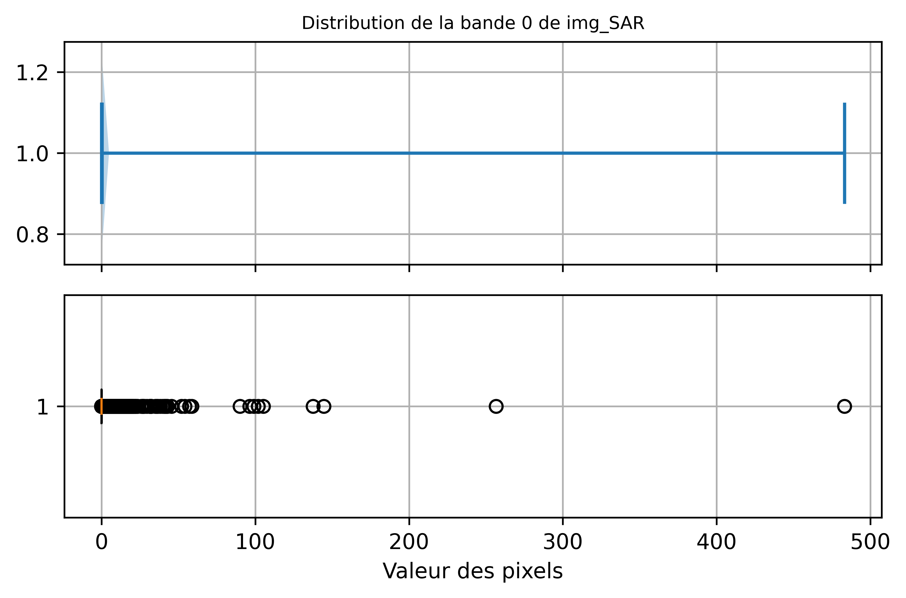
Afin de visualiser correctement l’histogramme, il faut se limiter à un interval de valeurs plus petit. Dans le code ci-dessous, on impose à la fonction histogramme de compter les valeurs de pixels dans des intervalles de valeurs fixés par la fonction np.linspace(percentiles[0.1],percentiles[99.9], 50) où percentiles[0.1] et percentiles[99.9] sont les \(0.1\%\) et \(99.9\%\) percentiles respectivement:
hist, bin_edges = np.histogram(values,
bins=np.linspace(percentiles[0.1],
percentiles[99.9], 50),
density=True)
fig, ax = plt.subplots(nrows=2,ncols=1,figsize=(6, 5), sharex=True)
ax[0].bar(bin_edges[:-1],
hist*(bin_edges[1]-bin_edges[0]),
width= (bin_edges[1]-bin_edges[0]),
edgecolor= 'w')
ax[0].set_title("Distribution de probabilité (PDF)")
ax[0].set_ylabel("Densité de probabilité")
ax[0].grid(True)
ax[1].plot(bin_edges[:-1],
hist.cumsum()*(bin_edges[1]-bin_edges[0]))
ax[1].set_title("Distribution de probabilité cumulée (CDF)")
ax[1].set_xlabel("Valeur du pixel")
ax[1].set_ylabel("Probabilité cumulée")
ax[1].grid(True)
plt.tight_layout()
plt.show() 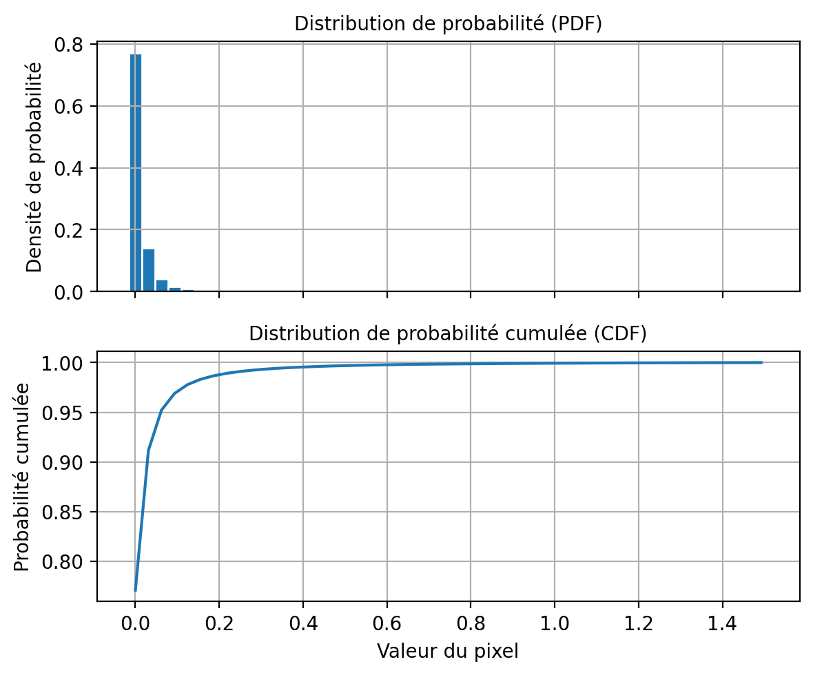
Au niveau de l’affichage avec matplotlib, la dynamique peut être contrôlée directement via les paramètres vmin et vmax comme ceci:
fig, ax = plt.subplots(nrows=2, ncols=2, figsize=(6, 5), sharex=True, sharey=True)
[a.axis('off') for a in ax.flatten()]
ax[0,0].imshow(img_SAR[0].values, vmin=percentiles[0], vmax=percentiles[100])
ax[0,0].set_title(f"0% - 100%={percentiles[0]:2.1f} - {percentiles[100]:2.1f}")
ax[0,1].imshow(img_SAR[0].values, vmin=percentiles[0.1], vmax=percentiles[99.9])
ax[0,1].set_title(f"0.1% - 99.9%={percentiles[0.1]:2.1f} - {percentiles[99.9]:2.1f}")
ax[1,0].imshow(img_SAR[0].values, vmin=percentiles[1], vmax=percentiles[99])
ax[1,0].set_title(f"1% - 99%={percentiles[1]:2.1f} - {percentiles[99]:2.1f}")
ax[1,1].imshow(img_SAR[0].values, vmin=percentiles[2], vmax=percentiles[98])
ax[1,1].set_title(f"2% - 98%={percentiles[2]:2.1f} - {percentiles[98]:2.1f}")
plt.tight_layout()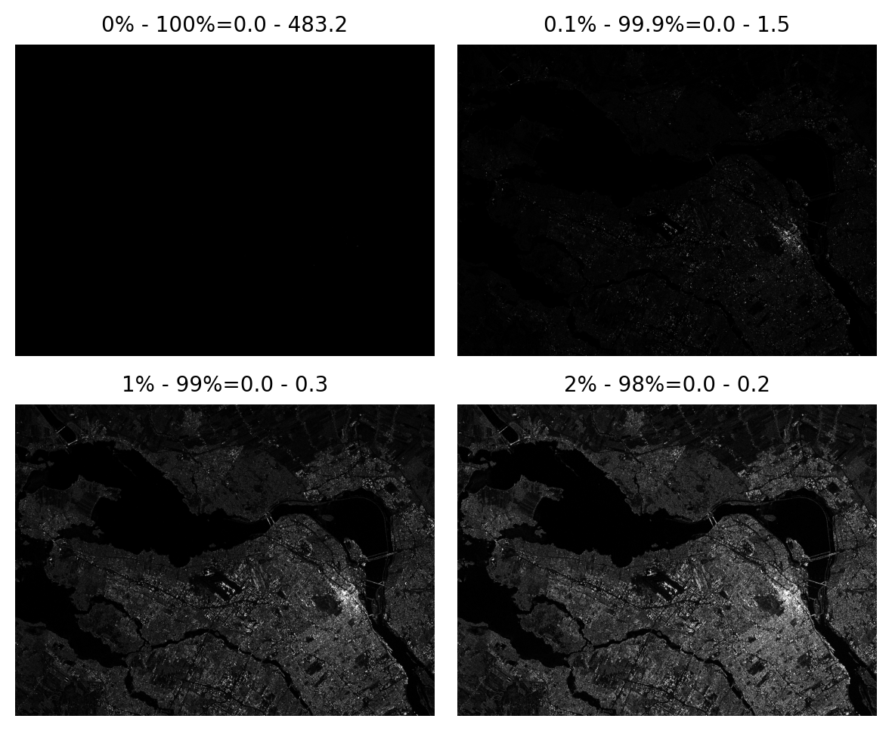
3.3.3 Réhaussements non linéaires
3.3.3.1 Réhaussement par fonctions
Le réhaussenent par fonction consiste à appliquer une fonction non linéaire afin de modifier la dynamique de l’image. Par exemple, pour une image radar, une transformation populaire est dd’afficher les valeurs de rétrodiffusion en décibel (dB) via la fonction log10().
percentiles_position= (0,0.1,1,2,50,98,99,99.9,100)
values= np.log10(img_SAR[0]).data
percentiles_db= dict(zip(percentiles_position, np.percentile(values, percentiles_position)))
print(percentiles_db){0: np.float64(-5.08764123916626), 0.1: np.float64(-4.7989475197792055), 1: np.float64(-4.062595067024231), 2: np.float64(-3.7247793674468994), 50: np.float64(-1.9075313806533813), 98: np.float64(-0.7646052074432372), 99: np.float64(-0.5534139317274169), 99.9: np.float64(0.182865420415998), 100: np.float64(2.6841483116149902)}Les boxplots on une bien meilleure distribution proche d’une distribution Gaussienne:
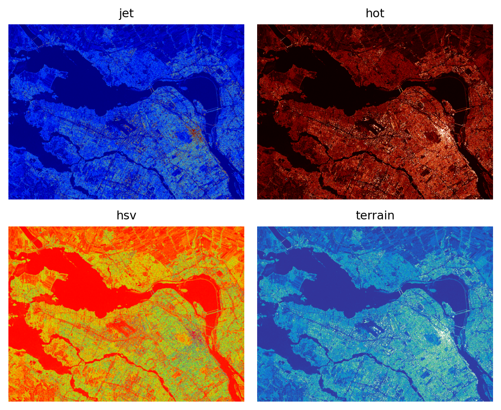
Ainsi que les images:
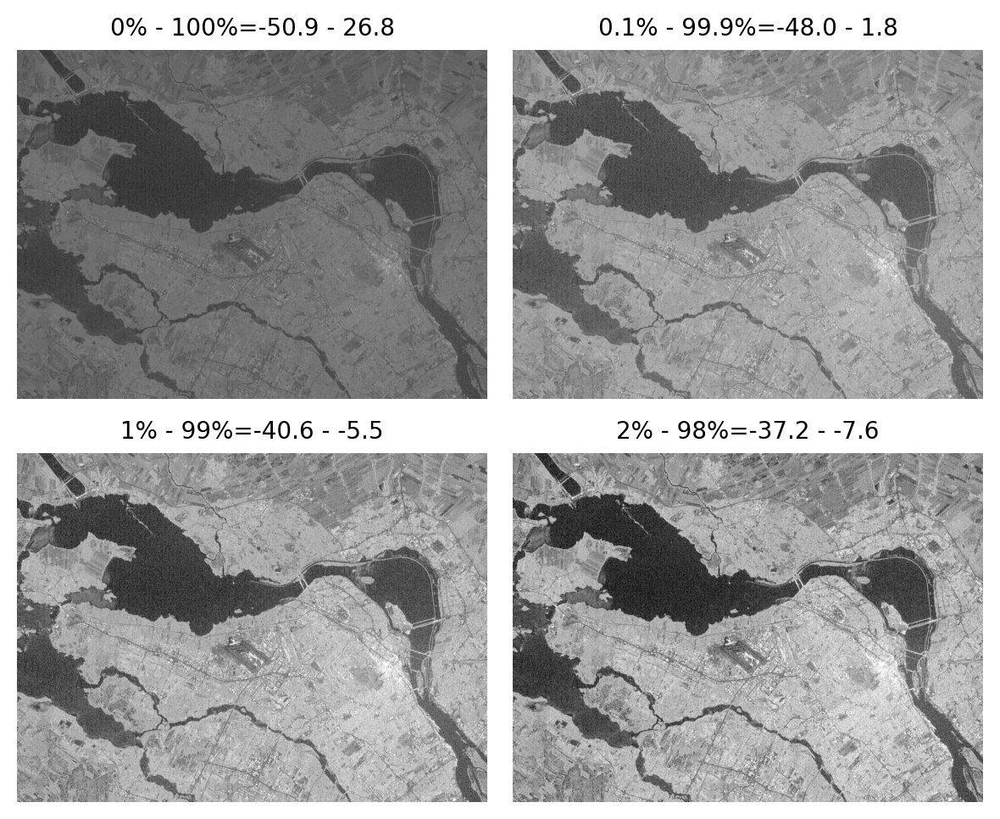
3.3.3.2 Égalisation d’histogramme
L’égalisation d’histogramme consiste à modifier les valeurs des pixels d’une image source de façon à ce que la distribution cumulée des valeurs (CDF) deviennent similaire à celle d’une image cible. La CDF (Cumulative Distribution Function) est simplement la somme cumulée des valeurs de l’histogramme:
\[ CDF_{source}(i)= \frac{1}{K}\sum_{j=0}^{j \leq i} hist_{source}(j) \] avec \(K\) choisit de façon à ce que la dernière valeur soit égale à 1 (\(CDF_{source}(i_{max})=1\)). De la même manière, \(CDF_{cible}\) est la CDF d’une image cible. La formule générale pour l’égalisation d’histogramme est la suivante: \[ j = CDF_{cible}^{-1}(CDF_{source}(i)) \]
On peut choisir \(CDF_{cible}\) comme correspondant à une image où chaque valeur de pixel est équiprobable (d’où le terme égalisation), ce qui veut dire \(hist_{cible}(j)=1/L\) avec \(L\) égale au nombre de valeurs possibles dans l’image (par exemple \(L=256\)). \[ j = L \times CDF_{source}(i) \] On peut appliquer cette procédure sur l’image SAR en dB de la façon suivante:
values= np.sort(np.log10(img_SAR[0].data.flatten()))
cdf_x= np.linspace(values[0], values[-1], 1000)
cdf_source= np.interp(cdf_x, values, np.arange(len(values))/len(values)*255)
values_eq=np.interp(np.log10(img_SAR[0].data), cdf_x, cdf_source).astype('uint8')
plt.imshow(values_eq)
plt.axis('off')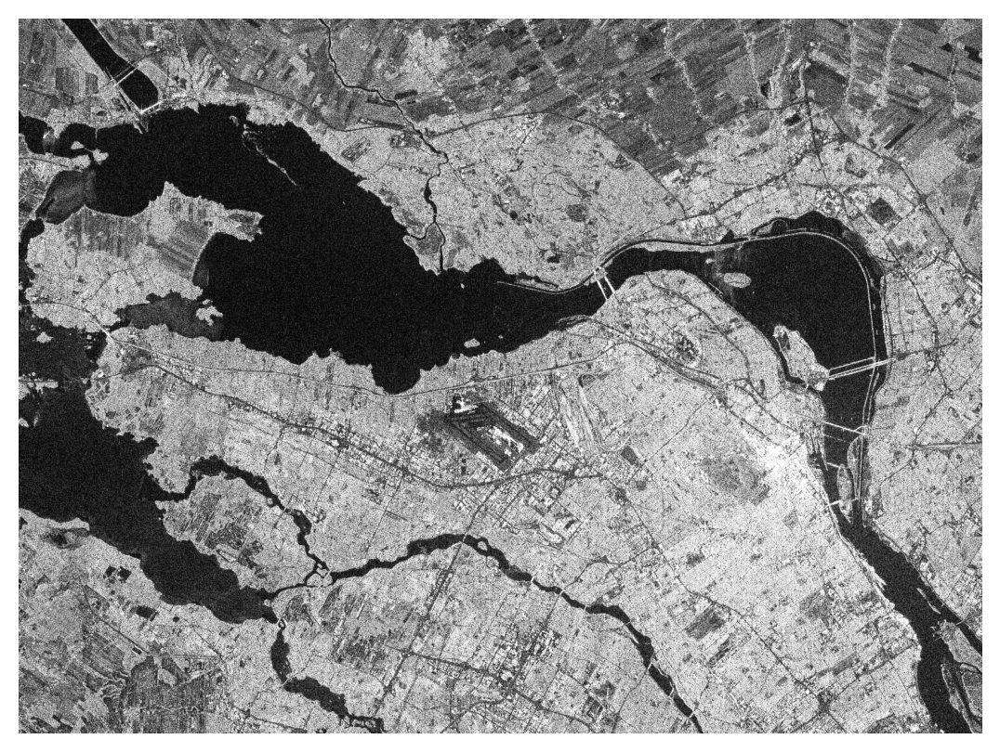
3.3.3.3 Palettes de couleur
Les palettes de couleurs sont appliquées dynamiquement à l’affichage sur une image à une seule bande. La librairie matplotlib contient un nombre important de palettes.
from matplotlib import colormaps
list(colormaps)Voici quelques exemples ci-dessous, les valeurs de l’image doivent être normalisées entre 0 et 1 ou entre 0 et 255 sinon les paramètres vmin et vmax doivent être spécifiés. On peut observer comment ces palettes révèlent les détails de l’image malgré une image originalement très sombre.
fig, ax = plt.subplots(nrows=2, ncols=2, figsize=(6, 5), sharex=True, sharey=True)
[a.axis('off') for a in ax.flatten()]
ax[0,0].imshow(img_SAR[0].data, vmin=percentiles[2], vmax=percentiles[98], cmap='jet')
ax[0,0].set_title(f"jet")
ax[0,1].imshow(img_SAR[0].data, vmin=percentiles[2], vmax=percentiles[98], cmap='hot')
ax[0,1].set_title(f"hot")
ax[1,0].imshow(img_SAR[0].data, vmin=percentiles[2], vmax=percentiles[98], cmap='hsv')
ax[1,0].set_title(f"hsv")
ax[1,1].imshow(img_SAR[0].data, vmin=percentiles[2], vmax=percentiles[98], cmap='terrain')
ax[1,1].set_title(f"terrain")
plt.tight_layout()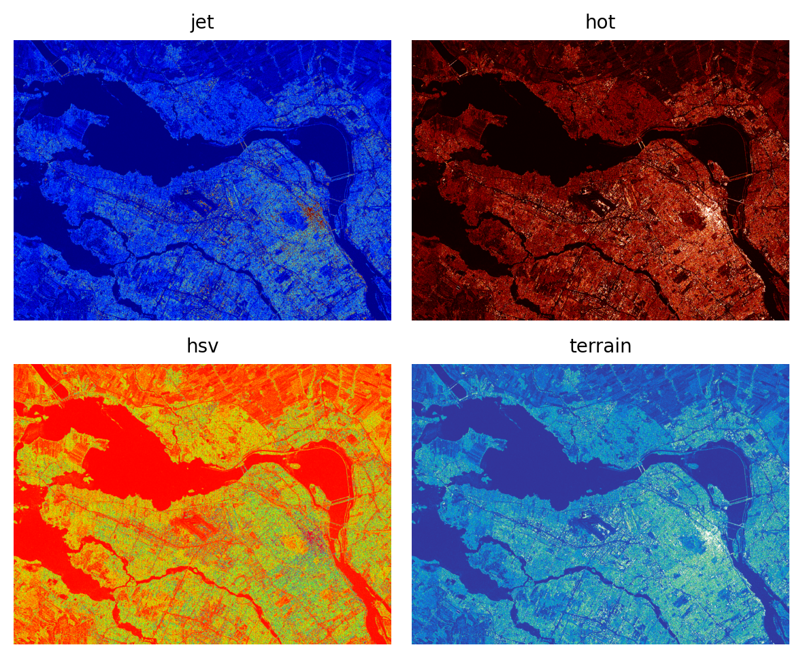
Il peut être utile d’ajouter une barre de couleurs afin d’indiquer la correspondance entre les couleurs et les valeurs numériques:
import matplotlib as mpl
fig, ax = plt.subplots(figsize=(6, 6))
cmap= mpl.colormaps.get_cmap('jet').with_extremes(under='white', over='magenta')
h=plt.imshow(img_SAR[0].data, norm=mpl.colors.LogNorm(vmin=percentiles[2], vmax=percentiles[98]),
cmap=cmap)
fig.colorbar(h, ax=ax, orientation='horizontal', label="Intensité", extend='both')
ax.axis('off') 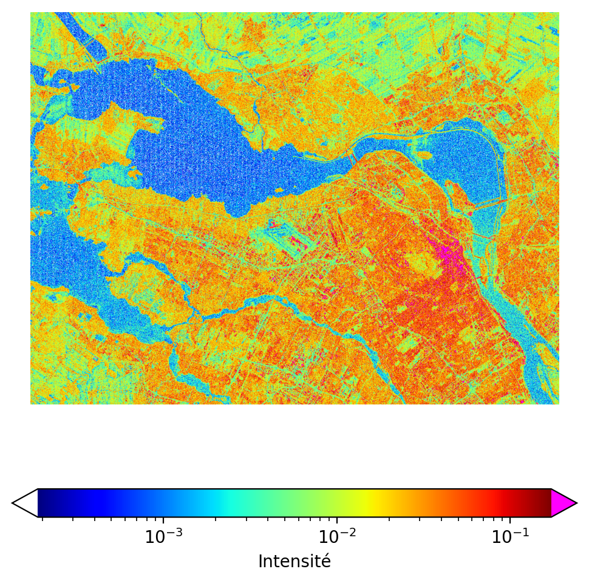
3.3.4 Composés couleurs
Le système visuel humain est sensible seulement à la partie visible du spectre électromagnétique qui compose les couleurs de l’arc-en-ciel du bleu au rouge. L’ensemble des couleurs du spectre visible peut être obtenu à partir du mélange de trois couleurs primaires (rouge, vert et bleu). Ce système de décomposition à trois couleurs est à la base de la plupart des systèmes de visualisation ou de représentation de l’information de couleur. On peut trouver des variantes comme le système HSV (Hue-Saturation-Value) utilisé en encodage de données vidéos.